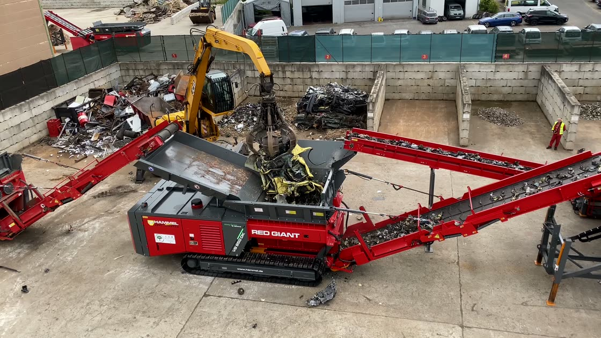

EINSATZBEREICH
Schrottverarbeitung
Metallhaltige Materialien müssen vor der weiteren Sortierung und Verwertung häufig zerkleinert werden. HAMMEL-Technik kann die Aufbereitung von Mischschrott und weiteren Metallfraktionen unterstützen.
- Mischschrott
- Metallschrott
- Metallhaltige Mischfraktionen
PASSENDE HAMMEL MASCHINEN
Maschinendaten werden geladen …